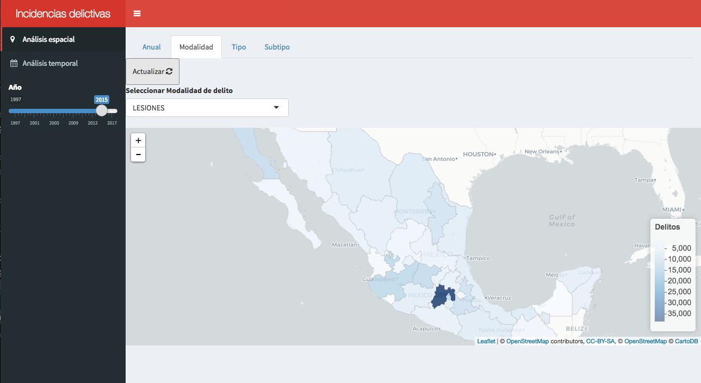

Introducción
R y RStudio
R es un lenguaje de programación estadístico. Facilita la manipulación de los datos, la simulación de eventos aleatorios empleando varias distribuciones, la generación de gráficos, entre un sin fin de aplicaciones.
Este taller tiene como objetivo presentar un primer acercamiento a R, exponiendo algunas de sus principales funciones. 20 funciones base y cada una tiene funciones relacionadas con la misma
R se usa desde la terminal, pero existen interfaces gráficas que facilitan su uso. La más popular es RStudio, ya que incorpora varios elementos en una sola ventana, como gráficos, directorios, variables y otros. Una de las ventajas de usar esta interfaz es que es homogénea a lo largo de los sistemas operativos.
Para empezar a escribir código en R, primero instalamos R desde el CRAN y después RStudio. CRAN es una red de servidores alrededor del mundo que contiene las versiones y documentación actualizadas de R.

Motivación
R es muy flexible y puedes llegar desarollar cosas tan elaboradas como: libros, aplicaciones web, vinculación con otros lenguajes de programación, modelos estadísticos robustos, simulaciones complejas, etc.


Todo esto es posible gracias a que R es de código abierto, es decir, podemos modificar la fuente del programa sin restricciones de licencia, a diferencia de muchos lenguajes que encierran su código y restringen los derechos de los mismos.
Además R se enriquece a base de contribuciones que los usuarios hacen por medio de paquetes. Un paquete es una colección de funciones documentadas sobre un tema en particular. Por ejemplo, ggplot2 es un paquete para generar gráficos basado en The Grammar of Graphics, o shiny que se utiliza para crear aplicaciones web como las de las imágenes anteriores o este taller.
0. ¿Qué es una función en R?
Las funciones en R realizan una acción a partir de ciertos argumentos, como calcular un promedio, leer una base de datos, etc. R cuenta con varias funciones pre-cargadas y se puede tener acceso a muchas más instalando paquetes. La estructura general de una función en R se muestra en la siguiente imagen:

1. Funciones básicas
¿Cómo puedo encontrar ayuda dentro de R?
 Función 1:
Función 1: help
help('mean')
?mean()
help.search('variance')Directorio de trabajo
R trabaja apuntando al directorio en nuestra computadora.
Función 2: getwd
Utilizamos esta función para saber en qué directorio estamos trabajando. getwd no necesita de argumentos.
getwd()## [1] "/Users/mcarmonabaez/Documents/Mariana y asi/Rladies/taller_r"Para cambiar el directorio, tenemos que especificarlo como argumento en la función setwd.
setwd("ruta_de_directorio")Comentarios
R usa el signo # para añadir comentarios, para que tú y otros puedan enteder de qué se trata el código. Los comentarios no se corren como código, por lo tanto no tendrán influencia en el resultado.
Ejemplo del uso de #
5 + 8
#5 + 4 Función 3: install.packages
Como mencionamos antes, una de las principales ventajas de R es que la comunidad aporta por medio de paquetes que dan funcionalidad adicional a R base.
Podemos instalar paquetes por medio de la función install.packages(). Por ejemplo, si quiero instalar ggplot2 escribiría:
install.packages("ggplot2")Una vez que instalamos un paquete, queda guardado en nuestra computadora. Cada vez que queramos hacer uso de él tenemos que llamarlo con la función library().
library(ggplot2)2. R como calculadora
Aritmética en R
R puede ser utilizado como si fuera una calculadora.

- Suma
+
5 + 5## [1] 10- Resta
-
10 - 3## [1] 7- Multiplicación
*
3 * 4## [1] 12- División
/
25 / 7## [1] 3.571429- Potencia
^
2^3## [1] 8- Raíz
sqrt()
sqrt(49)## [1] 7- Modulo
%%
8 %% 2## [1] 0También están disponibles las funciones trigonométricas: sin, cos, etc.
Extra: la función round() sirve para redondear valores numéricos.
round(sqrt(2), 2)## [1] 1.41Ejercicio: Calcula la raíz del promedio entre 5 y 7.
sqrt((5 + 7) / 2)3. Creación de variables
Asignación de variables
Función 4: <-
Una variable permite guardar un valor u objeto. Después se puede usar el nombre de las variables para facilmente obtener el valor u objeto contenido en ella. La asignación se hace a través del operador <-.
Con el shortcut alt + - podemos generar <-.
mi_variable <- 5 Para imprimir el valor de una variable basta con llamarla con el nombre que le asignamos.
mi_variable## [1] 5Supongamos se tiene la información de las distintas frutas que se compraron:
higos <- 20
naranjas <- 7
manzanas <- 5
limones <- 9Con el nombre de las variables podemos saber el total de fruta que se tiene
frutas <- higos + naranjas + manzanas + limones
frutas## [1] 41En R hay varios tipos de objeto, los principales son:
integer: número enterodouble: número con precisión de punto flotantecharacter: cadena de caractereslogical: booleano (TRUE, FALSE)
Algunos tipos especiales son:
NA: valor faltanteNULL: valor no definidoInf: resultado de dividir entre 0NaN: resultado de una operación no definida (0/0)
Ejercicio: Crea una variable que se llame mi_edad y asígnale el valor de tu edad. Después, imprime el valor de la variable.
mi_edad <- 28
mi_edadNota: Te sugerimos que los nombres de variables los escribas con letras minúsculas, números y _. Usa los guiones bajos (_) para separar palabras dentro del nombre. Nos basamos en la guía de estilo de Hadley Wickham, aunque tú puedes usar otra forma, solo procura ser consistente a lo largo de tu código. Recuerda que R es sensible a mayúsculas y minúsculas.
Elemplos:
# Bien
day_one
day_1
# Mal
DayOne
dayone4. Vectores
Un vector es una secuencia de elementos del mismo tipo. Los elementos de un vector se llaman componentes.
Creación de vectores
Función 5: c
Podemos generar vectores a través de diversas funciones,
c(): sirve para concatenar elementos. Los argumentos son los componentes de nuestro vector.
x <- c(7, 11, 13)
x## [1] 7 11 13:: genera una secuencia de números enteros. Necesitamos indicarle el inicio y fin de nuestra secuencia.
x <- 1:10
x## [1] 1 2 3 4 5 6 7 8 9 10Si el número de inicio es mayor al de fin, genera la secuencia de manera descendente.
10:1## [1] 10 9 8 7 6 5 4 3 2 1seq(): para crear secuencias más complejas. Tiene varias modalidades,
- Indicar el tamaño de salto con el argumento
by
x <- seq(from = 0, to = 1, by = 0.1)
x## [1] 0.0 0.1 0.2 0.3 0.4 0.5 0.6 0.7 0.8 0.9 1.0- Indicar la longitud de la secuencia usando el argumento
length.out
x <- seq(from = 0, to = 1, length.out = 3)
x## [1] 0.0 0.5 1.0rep(): crea un vector a partir de repeticiones de los componentes de otro.
- Se puede repetir el vector completo tantas veces queramos con el argumento
times.
x <- rep(1:4, times = 3)
x## [1] 1 2 3 4 1 2 3 4 1 2 3 4- O bien, repetir elemento por elemento usnado el argumento
each.
x <- rep(1:2, each = 3)
x## [1] 1 1 1 2 2 2sample(): Para generar vectores aleatorios a partir de muestras de otro. Tenemos que darle como argumentos el vector del que se tomará la muestra y el tamaño de la misma.
De manera predeterminada el muestreo se hace sin reemplazo.
sample(1:100, size = 10)## [1] 21 28 18 70 80 4 13 74 40 20Si queremos hacer la muestra con reemplazo, usamos el argumento lógico replace
sample(1:100, size = 30, replace = TRUE)## [1] 32 71 13 8 99 32 60 61 97 10 23 48 98 16 60 15 39 27 18 81 2 66 70 96 90
## [26] 74 4 12 60 46También podemos crear vectores a través de la unión de otros, para esto volvemos a hacer uso de la función c().
x <- c(18, 23, 59)
x## [1] 18 23 59y <- c(1:5, x)
y## [1] 1 2 3 4 5 18 23 59En R existen algunos vectores de caracteres previamente cargados:
letters: 26 letras del alfabeto en minúsculasLETTERS: 26 letras del alfabeto en mayúsculasmonth.name: nombres de los meses en inglésmonth.abb: la abreviatura de 3 letras de los meses en inglés
letters## [1] "a" "b" "c" "d" "e" "f" "g" "h" "i" "j" "k" "l" "m" "n" "o" "p" "q" "r" "s"
## [20] "t" "u" "v" "w" "x" "y" "z"LETTERS## [1] "A" "B" "C" "D" "E" "F" "G" "H" "I" "J" "K" "L" "M" "N" "O" "P" "Q" "R" "S"
## [20] "T" "U" "V" "W" "X" "Y" "Z"month.name## [1] "January" "February" "March" "April" "May" "June"
## [7] "July" "August" "September" "October" "November" "December"month.abb## [1] "Jan" "Feb" "Mar" "Apr" "May" "Jun" "Jul" "Aug" "Sep" "Oct" "Nov" "Dec"Identificar el tipo de un vector
Función 6: str
La función str() podemos conocer la estructura de un vector. Esta función es de las más usadas en R y nos servirá para otras estructuras de datos, no solo para vectores.
y <- c("Mariana", "Juanito", "Luis")
str(y)## chr [1:3] "Mariana" "Juanito" "Luis"z <- 1:4
str(z)## int [1:4] 1 2 3 4x <- c(1,2,'hola', TRUE)
str(x)## chr [1:4] "1" "2" "hola" "TRUE"# ¿Por qué?Tambien existe la función class(), la cual devuelve únicamente el tipo de objeto.
class(z)## [1] "integer"
Ejercicio: Crea una secuencia de números impares que vaya del 11 al 21 e imprime de qué tipo es.
# Solución 1:
secuencia <- seq(11, 21, by = 2)
secuencia
class(secuencia)
# Solución 2
class(seq(11, 21, by = 2))5. Funciones para vectores
Reordenar un vector
Función 7: sort
La función sort() regresa los elementos del vector ordenados de menor a mayor.
x <- c(4,2,8,11,1,30,11.5)
sort(x)## [1] 1.0 2.0 4.0 8.0 11.0 11.5 30.0Con el argumento decreasing podemos decirle que necesitamos que el orden sea de mayor a menor.
x <- c(4,2,8,11,1,30,11.5)
sort(x, decreasing = TRUE)## [1] 30.0 11.5 11.0 8.0 4.0 2.0 1.0Usando la función rev() obtenemos un vector con el orden de los elementos invertido.
x <- c(5, 3, 7, 9)
rev(x)## [1] 9 7 3 5
Ejercicio: Crea un vector que se llame series y contenga una serie que va del 3 al 9 de uno en uno y otra del 10 al 40 con saltos de tres. Después invierte el orden del vector.
series <- c(3:9, seq(10, 40, by = 3))
series
rev(series)Características de un vector
Función 8: length
La función length() sirve para conocer la longitud de un vector.
x <- c(rep(1:2, each = 3), rep(8:10, times = 2), 4, 5 ,2)
x## [1] 1 1 1 2 2 2 8 9 10 8 9 10 4 5 2length(x)## [1] 15Cuando nos interesa saber cuáles son los elementos únicos, usamos la función unique().
unique(x)## [1] 1 2 8 9 10 4 5Ya que sabemos los diferentes elementos de un vector, seguiría saber cuántos hay de cada uno. Para esto existe la función table() que nos regresa una tabla de frecuencias.
table(x)## x
## 1 2 4 5 8 9 10
## 3 4 1 1 2 2 2Ejercicio: Construye un vector que se llame volado que sea de tamaño 50 y sea creado a partir de una muestra de las palabras “águila” y ’sol. Después haz una tabla de frecuencias del vector.
volado <- sample(c('águila', 'sol'), size = 50, replace = TRUE)
table(volado)Índices de un vector
En R cada elemento de un vector tiene una posición. El primer componente de un vector tiene la posición 1, a diferencia de otros lenguajes que empiezan en 0. Entonces si queremos ver el tercer elemento de un vector, haremos referencia al elemento en la posicion 3. Por medio de [ ] tenemos acceso a los elementos dentro de un vector.
y <- seq(1:20)
y[5]## [1] 5y[3]## [1] 3Si queremos omitir algún elemento, indicamos su posición con signo negativo.
y[-5]## [1] 1 2 3 4 6 7 8 9 10 11 12 13 14 15 16 17 18 19 20y[-3]## [1] 1 2 4 5 6 7 8 9 10 11 12 13 14 15 16 17 18 19 20Cuando lo que nos interesa son varios elementos, dentro de los corchetes incluímos un vector con las posiciones deseadas.
y[4:8]## [1] 4 5 6 7 8y[c(3,7)]## [1] 3 7De manera análoga, si quieremos ver el vector sin un subconjunto de elementos, indicamos las posiciones con signo negativo.
y[-(3:6)]## [1] 1 2 7 8 9 10 11 12 13 14 15 16 17 18 19 20y[-c(1,length(y))]## [1] 2 3 4 5 6 7 8 9 10 11 12 13 14 15 16 17 18 19¿Qué pasa si le pedimos una posición que se sale de la longitud del vector?
Ejercicio: Crea un vector que se llame z que contenga una secuencia que empiece en 5, que vaya en saltos de 0.25 de longitud 8 e imprime el último elemento.
z <- seq(5, by = 0.25, length.out = 8)
z[length(z)]Selección de elementos
Función 9: which
En ocasiones no conocemos la posición exacta en la que está almacenado el valor que nos interesa. En estos casos hacemos uso de la función which(), nos ayuda a encontrar las posiciones de los elementos que cumplen la condición que buscamos.
y## [1] 1 2 3 4 5 6 7 8 9 10 11 12 13 14 15 16 17 18 19 20which(y < 10)## [1] 1 2 3 4 5 6 7 8 9De manera similar, si queremos conocer en dónde están guardados el mínimo y el máximo usamos las funciones which.min() y which.max().
which.min(y)## [1] 1which.max(y)## [1] 20Conociendo las posiciones de los elementos que nos interesan, podemos utilizarlas para extraer a dichos elementos.
y[which(y > 10)]## [1] 11 12 13 14 15 16 17 18 19 20y[which(y == 10)] # "==" sirve para comparar si un elemento es igual a otro## [1] 10y[which(y != 10)] # "!=" compara si los elementos son distintos## [1] 1 2 3 4 5 6 7 8 9 11 12 13 14 15 16 17 18 19 20Una función que también nos ayuda a extraer subconjuntos de un vector que cumplen cierta condición es subset().
subset(y, y > 10)## [1] 11 12 13 14 15 16 17 18 19 20Estas funciones operan de manera similar cuando se trata de vectores de caracteres:
pan <- c('dona', 'oreja', 'concha', 'chocolatin')
pan[pan == 'dona']## [1] "dona"pan[pan == 'bolillo'] # ¿Qué pasa?## character(0)Ejercicio: ¿En qué posición está la letra L en el alfabeto? Utiliza el vector LETTERS para encontrarla.
which(LETTERS == 'L')Operaciones con vectores
En R, las operaciones aritméticas con vectores se realizan componente a componente.
x <- c(2,4,6)
y <- c(10,8,5)
z <- rep(2, times = 5)
x + y## [1] 12 12 11x - y## [1] -8 -4 1x*y## [1] 20 32 30x/y## [1] 0.2 0.5 1.2exp(x)## [1] 7.389056 54.598150 403.428793Para el producto punto se utiliza el operador %*%.
x %*% y## [,1]
## [1,] 82Si realizamos una operación con vectores que no tienen la misma longitud, R recicla los valores del vector de longitud menor hasta coincidir con la longitud del vector más grande. (Además nos regresará un warning).
y + z## Warning in y + z: longer object length is not a multiple of shorter object
## length## [1] 12 10 7 12 10También podemos hacer operaciones lógicas componente a componente. Los operadores que se utilizan son los siguientes:
==: evalúa igualdad!=: evalúa desigualdad<,>,<=,>=: menor, mayor, menor que y mayor que%in%: evalúa pertenencia
Ejemplos de uso:
x <- 1:5
y <- 2:6
x %in% y## [1] FALSE TRUE TRUE TRUE TRUEx == y## [1] FALSE FALSE FALSE FALSE FALSEEjercicio: Del vector pan, encuentra para qué posiciones se cumple que contienen las palabras “dona” y “chocolatin”.
pan <- c('dona', 'oreja', 'concha', 'chocolatin')pan <- c('dona', 'oreja', 'concha', 'chocolatin')
pan %in% c('dona', 'chocolatin')Funciones estadísticas
Función 10: mean
Para conocer los estadísticos resumen de un vector, existen varias funciones en R base que nos ayudan a obtenerlos.
Nota: Si colocamos entre paréntesis la asignación de una variable, se imprime el resultado de la asignación.
set.seed(19900707)
(w <- sample(2:50, size = 20, replace = TRUE))## [1] 44 43 41 11 42 39 46 18 48 43 16 27 17 44 26 33 47 27 21 29(z <- sample(30:80, size = 20, replace = TRUE))## [1] 42 66 37 51 76 70 34 65 78 52 41 72 63 40 41 63 39 39 57 40mean(w) # Media## [1] 33.1max(w) # Máximo## [1] 48min(w) # Mínimo## [1] 11median(w) # Mediana## [1] 36var(w) # Varianza## [1] 144.6211sd(w) # Desviación estándar## [1] 12.02585sum(z) # Suma## [1] 1066cumsum(z) # Suma acumulada## [1] 42 108 145 196 272 342 376 441 519 571 612 684 747 787 828
## [16] 891 930 969 1026 1066Si queremos obtener los cuantiles de un vector, utilizamos la función quantile. En el argumento probs indicamos los cuantiles que nos interesan a manera de vector. En caso de no utilizar este argumento, nos regresa los cuantiles 0, 0.25, 0.5, 0.75 y 1.
quantile(w, probs = c(0.1, 0.9))## 10% 90%
## 16.9 46.1quantile(w, probs = seq(0, 1, by = 0.1))## 0% 10% 20% 30% 40% 50% 60% 70% 80% 90% 100%
## 11.0 16.9 20.4 26.7 28.2 36.0 41.4 43.0 44.0 46.1 48.0quantile(w)## 0% 25% 50% 75% 100%
## 11.00 24.75 36.00 43.25 48.00Calculamos la correlación entre dos vectores con la función cor().
cor(w, z)## [1] -0.01956288Ejercicio: Calcula el promedio y desviación estándar de los números del 1 al 100.
mean(1:100)
sd(1:100)6. Distribuciones de probabilidad
Función 11: rnorm
R cuenta con funciones que nos permiten generar vectores a partir de distribuciones de probabilidad. Cada distribución tiene 4 funciones, las cuales están compuestas por la raíz del nombre de la distribución, por ejemplo, en el caso de la normal es norm. Estas raíces tienen como prefijo 4 letras de acuerdo a lo que buscamos obtener.
p: probabilidad. Función de distribución acumulada.q: cuantil. Inversa de la distribución acumulada.d: densidad. Función de densidad.r: simulación (random). Genera números aleatorios a partir de una distribución en particular.
Los argumentos de cada una de estas funciones varían de acuerdo a la distribución con la que queremos trabajar, ya que dependen de los parámetros de esta. Veremos su uso tomando como ejemplo la distribución normal, ya que es la más común. Los argumentos en este caso son la media y la desviación estándar, mean y sd, respectivamente.
pnorm(0, mean = 0, sd = 1)## [1] 0.5qnorm(0.95, mean = 0, sd = 1)## [1] 1.644854dnorm(-0.5, mean = 0, sd = 1)## [1] 0.3520653rnorm(n = 10, mean = 2, sd = 3)## [1] 2.90013694 3.35566726 2.56554690 4.92186764 7.43561173 6.02881481
## [7] 0.76763780 -0.09616337 -2.00543175 1.98941189A continuación vemos las raíces para algunas de las distribuciones más usadas:

Nota: Es importante fijarnos en la documentación para ver la parametrización que se está utilizando.
Ejercicio: Genera 1000 números a partir de una distribición normal con media 20 y desviación estándar 10 y comprueba que su media es aproximadamente 20.
sim_normal <- rnorm(1000, 20, 10)
mean(sim_normal)
# Otra solución sería:
mean(rnorm(1000, 20, 10))7. Matrices y Listas
Aunque no nos enfocaremos en este tipo de estructuras, es importante conocerlas.
Hasta ahora hemos trabajado con objetos de una sola dimensión.
Función 12: matrix
Las matrices son estructuras de datos de dos dimensiones. Una matriz se define con la función matrix().
La lista es una estructura de datos de una dimensión que permite distintas clases de elementos en el objeto. La función list() permite crear objetos de esta clase.

8. Data Frames
Un data frame es una estrucura de dos dimensiones que se utiliza para guardar tablas de datos. Es una lista de vectores de la misma longitud.
Función 13: data.frame
Podemos crear un data frame a través de la función data.frame(). Los argumentos de la función son los elementos (columnas) de nuestra tabla de datos.
n <- 1:3
s <- letters[1:3]
b <- c(TRUE, FALSE, TRUE)
df <- data.frame(n, s, b)
dfEn R exsiten varios data frame precargados con los que podemos empezar a explorar este tipo de objetos sin tener que importarlos o crearlos.
Para motivos de este taller utilizaremos la base movies que se encuentra dentro del paquete ggplot2movies.
Explorar un data frame
Primero instalamos el paquete ggplot2movies para explorar los datos de la base movies.
install.packages("ggplot2movies")library(ggplot2movies) Función 14: head
Muestra las primeras seis observasiones (filas) de la base.
head(movies)Tiene la opción de poder indicar cuántas observaciones se quieren ver a través del argumento n.
head(movies, n = 10)De manera análoga, la función tail muestra las últimas seis observasiones (filas) de la base.
tail(movies)Al igual que head, tail tiene la opción de poder modificar le número de observaciones que queremos ver.
tail(movies, 10)Nota: Si queremos visualizar los datos de una manera más amigable, podemos hacer uso de la función View, la cual despliega una nueva pestaña con los datos a manera de “hoja de Excel”.
View(movies) Función 15: summary
summary() regresa un resumen estadístico general cuando se trata de columnas numéricas. Si se trata de caracteres, nos dice la longitud y si hay presencia de datos faltantes. (También podemos utilizar esta función con vectores.)
summary(movies)## title year length budget
## Length:58788 Min. :1893 Min. : 1.00 Min. : 0
## Class :character 1st Qu.:1958 1st Qu.: 74.00 1st Qu.: 250000
## Mode :character Median :1983 Median : 90.00 Median : 3000000
## Mean :1976 Mean : 82.34 Mean : 13412513
## 3rd Qu.:1997 3rd Qu.: 100.00 3rd Qu.: 15000000
## Max. :2005 Max. :5220.00 Max. :200000000
## NA's :53573
## rating votes r1 r2
## Min. : 1.000 Min. : 5.0 Min. : 0.000 Min. : 0.000
## 1st Qu.: 5.000 1st Qu.: 11.0 1st Qu.: 0.000 1st Qu.: 0.000
## Median : 6.100 Median : 30.0 Median : 4.500 Median : 4.500
## Mean : 5.933 Mean : 632.1 Mean : 7.014 Mean : 4.022
## 3rd Qu.: 7.000 3rd Qu.: 112.0 3rd Qu.: 4.500 3rd Qu.: 4.500
## Max. :10.000 Max. :157608.0 Max. :100.000 Max. :84.500
##
## r3 r4 r5 r6
## Min. : 0.000 Min. : 0.000 Min. : 0.000 Min. : 0.00
## 1st Qu.: 0.000 1st Qu.: 0.000 1st Qu.: 4.500 1st Qu.: 4.50
## Median : 4.500 Median : 4.500 Median : 4.500 Median :14.50
## Mean : 4.721 Mean : 6.375 Mean : 9.797 Mean :13.04
## 3rd Qu.: 4.500 3rd Qu.: 4.500 3rd Qu.: 14.500 3rd Qu.:14.50
## Max. :84.500 Max. :100.000 Max. :100.000 Max. :84.50
##
## r7 r8 r9 r10
## Min. : 0.00 Min. : 0.00 Min. : 0.000 Min. : 0.00
## 1st Qu.: 4.50 1st Qu.: 4.50 1st Qu.: 4.500 1st Qu.: 4.50
## Median : 14.50 Median : 14.50 Median : 4.500 Median : 14.50
## Mean : 15.55 Mean : 13.88 Mean : 8.954 Mean : 16.85
## 3rd Qu.: 24.50 3rd Qu.: 24.50 3rd Qu.: 14.500 3rd Qu.: 24.50
## Max. :100.00 Max. :100.00 Max. :100.000 Max. :100.00
##
## mpaa Action Animation Comedy
## Length:58788 Min. :0.00000 Min. :0.00000 Min. :0.0000
## Class :character 1st Qu.:0.00000 1st Qu.:0.00000 1st Qu.:0.0000
## Mode :character Median :0.00000 Median :0.00000 Median :0.0000
## Mean :0.07974 Mean :0.06277 Mean :0.2938
## 3rd Qu.:0.00000 3rd Qu.:0.00000 3rd Qu.:1.0000
## Max. :1.00000 Max. :1.00000 Max. :1.0000
##
## Drama Documentary Romance Short
## Min. :0.000 Min. :0.00000 Min. :0.0000 Min. :0.0000
## 1st Qu.:0.000 1st Qu.:0.00000 1st Qu.:0.0000 1st Qu.:0.0000
## Median :0.000 Median :0.00000 Median :0.0000 Median :0.0000
## Mean :0.371 Mean :0.05906 Mean :0.0807 Mean :0.1609
## 3rd Qu.:1.000 3rd Qu.:0.00000 3rd Qu.:0.0000 3rd Qu.:0.0000
## Max. :1.000 Max. :1.00000 Max. :1.0000 Max. :1.0000
## Como vimos previamente, str nos regresa información sobra la estructura de un objeto.
str(movies)## tibble [58,788 × 24] (S3: tbl_df/tbl/data.frame)
## $ title : chr [1:58788] "$" "$1000 a Touchdown" "$21 a Day Once a Month" "$40,000" ...
## $ year : int [1:58788] 1971 1939 1941 1996 1975 2000 2002 2002 1987 1917 ...
## $ length : int [1:58788] 121 71 7 70 71 91 93 25 97 61 ...
## $ budget : int [1:58788] NA NA NA NA NA NA NA NA NA NA ...
## $ rating : num [1:58788] 6.4 6 8.2 8.2 3.4 4.3 5.3 6.7 6.6 6 ...
## $ votes : int [1:58788] 348 20 5 6 17 45 200 24 18 51 ...
## $ r1 : num [1:58788] 4.5 0 0 14.5 24.5 4.5 4.5 4.5 4.5 4.5 ...
## $ r2 : num [1:58788] 4.5 14.5 0 0 4.5 4.5 0 4.5 4.5 0 ...
## $ r3 : num [1:58788] 4.5 4.5 0 0 0 4.5 4.5 4.5 4.5 4.5 ...
## $ r4 : num [1:58788] 4.5 24.5 0 0 14.5 14.5 4.5 4.5 0 4.5 ...
## $ r5 : num [1:58788] 14.5 14.5 0 0 14.5 14.5 24.5 4.5 0 4.5 ...
## $ r6 : num [1:58788] 24.5 14.5 24.5 0 4.5 14.5 24.5 14.5 0 44.5 ...
## $ r7 : num [1:58788] 24.5 14.5 0 0 0 4.5 14.5 14.5 34.5 14.5 ...
## $ r8 : num [1:58788] 14.5 4.5 44.5 0 0 4.5 4.5 14.5 14.5 4.5 ...
## $ r9 : num [1:58788] 4.5 4.5 24.5 34.5 0 14.5 4.5 4.5 4.5 4.5 ...
## $ r10 : num [1:58788] 4.5 14.5 24.5 45.5 24.5 14.5 14.5 14.5 24.5 4.5 ...
## $ mpaa : chr [1:58788] "" "" "" "" ...
## $ Action : int [1:58788] 0 0 0 0 0 0 1 0 0 0 ...
## $ Animation : int [1:58788] 0 0 1 0 0 0 0 0 0 0 ...
## $ Comedy : int [1:58788] 1 1 0 1 0 0 0 0 0 0 ...
## $ Drama : int [1:58788] 1 0 0 0 0 1 1 0 1 0 ...
## $ Documentary: int [1:58788] 0 0 0 0 0 0 0 1 0 0 ...
## $ Romance : int [1:58788] 0 0 0 0 0 0 0 0 0 0 ...
## $ Short : int [1:58788] 0 0 1 0 0 0 0 1 0 0 ...Para conocer cuantas filas y columnas tiene nuestro data frame, usamos la función dim().
dim(movies)## [1] 58788 24Moverse en un data frame
Al igual que en el caso de vectores, con los data frame usamos [ ] para tener acceso a sus elementos. En este caso tenemos que indicar tanto las filas como las columnas.
dataframe[filas, columnas]
- Elegir una fila:
movies[10,]- Elegir una columna
head(movies[,1])- Elegir una fila y algunas columnas
movies[12, c(1,2,6)]- Elegir ciertas filas y columas
movies[12:20, c(1,2,6)]Otra manera de extraer una columna del data frame es a través de su nombre utilizando el signo: $
head(movies$title)## [1] "$" "$1000 a Touchdown"
## [3] "$21 a Day Once a Month" "$40,000"
## [5] "$50,000 Climax Show, The" "$pent"Esto nos permite trabajar con las columnas como si fueran vectores.
mean(movies$rating)## [1] 5.93285Para extraer un subconjunto del data frame usamos la función subset(). Le damos como primer argumento el data frame y como segundo argumento la condición que queremos filtrar.
drama <- subset(movies, Drama == 1)
head(drama)Ejercicio: Obtén el promedio de la variable votes del data frame movies.
mean(movies$votes)Transformar un data frame
Función 16: within
within() nos ayuda a crear nuevas columnas en un data frame. Tenemos que darle como primer argumento el data frame y como segundo, entre llaves, las expresiones que van a crear las nuevas variables.
m <- within(movies, { # Podemos agregar varias columas
horas = length/60
rating_centrado = rating - mean(rating)
rating_est = rating_centrado/sd(rating) # Podemos usar una columna que ya creamos
})
head(m)with() es similar a within(), sin embargo esta no modifica nuestro data frame solo nos regresa el vector de las variable que creamos.
m <- with(movies, {
suma = r1 + r2
})
head(m)## [1] 9.0 14.5 0.0 14.5 29.0 9.0La instrucción anterior es equivalente a:
m <- movies$r1 + movies$r2
head(m)## [1] 9.0 14.5 0.0 14.5 29.0 9.0Una manera distinta de agregar nuevas columnas a nuestro data frame es haciendo uso del signo $, además del comando de asignación <-.
movies$length_horas <- movies$length/60
head(movies)Ejercicio: Utilizando la función within crea una nueva columna usando el data frame movies que se llame votes_perfil que contenga la variable votes dividida entre su media. Al hacer esto perfilamos la variable de manera que las películas que tienen un número de votos mayor al promedio tendrán valores por arriba de 1 y menor a uno cuando están por debajo del promedio. Imprime los primeros renglones. Después saca el rango de votes y la nueva variable usando la función range.
movies_mod <- within(movies, {
votes_perfil <- votes/mean(votes)
})
head(movies_mod)
range(movies_mod$votes)
range(movies_mod$votes_perfil)Leer un data frame desde un archivo
Función 17: read.table
En la mayoría de las ocasiones, tenemos que hacer uso de datos de fuentes externas. La función read.table() nos ayuda a leer archivos de texto con distintas delimitaciones, por ejemplo: “;”, “,”, “|”.
Los argumentos más comunes de esta función es header para indicar si nuestros datos tienen nombres de columna y sep para indicar cómo están delimitados. Además de file en donde indicamos la ruta en donde está almacenada la información.
Ejemplo:
tabla <- read.table(file = "http://allman.rhon.itam.mx/~ebarrios/EstadisticaDescriptiva/cableTV.dat",
header = TRUE)
head(tabla)Para leer archivos con extensión .xls o .xlsx, existen algunos paquetes como readxl y openxlsx. Para archivos de SPSS, SAS, Stata y Minitab existe el paquete haven y foreign.
9. Gráficas
Función 18: plot
En R existen paquetes que nos ayudan a generar gráficas sofisticadas, como son ggplot2 y Plotly. Sin embargo, R base cuenta con funciones para crear gráficas de manera sencilla, como es el caso de plot().
La función plot() tiene como argumentos básicos el eje x y y.
plot(x = movies$rating, y = movies$votes)Otras funciones para graficar datos numéricos son hist() y boxplot() que generan histogramas y diagramas de caja, respectivamente.
hist(movies$rating)boxplot(movies$rating)Para conocer como podemos hacer modificaciones sobre la apariencia de una gráfica podemos consultar la ayuda de la función.
?plotProfundizaremos más sobre visualización de datos en la siguiente sesión.
10. if, while, for
Función 19: if
Cuando queremos programar rutinas hacemos uso de estruturas condicionales y de ciclos (loops).
- La estructura de un
ifen R es como sigue:
if (test_expression) {
statement
}Ejemplo:
x <- 5
if(x > 0){
print("Positivo")
}## [1] "Positivo"- La estructura de un
if...else:
if (test_expression) {
statement1
} else {
statement2
}Ejemplo:
x <- -5
if(x > 0){
print("No negativo")
} else {
print("Negativo")
}## [1] "Negativo"- La estructura de un
for:
for(i in 1:n) {
expression
}Ejemplo:
nombres <- c("Teresa", "Mariana", "Juan", "Mario", "Luis")
for(i in 1:length(nombres)) {
print(nombres[i])
}## [1] "Teresa"
## [1] "Mariana"
## [1] "Juan"
## [1] "Mario"
## [1] "Luis"- La estructura de un
while:
while(test_expression) {
expression
}Ejemplo:
x <- 1
while(x < 5) {
x <- x + 1
print(x)
}## [1] 2
## [1] 3
## [1] 4
## [1] 511. Funciones para cadenas de caracteres
Función 20: paste
La función paste() convierte a sus argumentos en caracteres y los concatena. El argumento sep sirve para indicarle cuál será el separador entre los caracteres.
paste("hola", 1000, "adiós", sep = "-")## [1] "hola-1000-adiós"Si usamos vectores, nos regresa un vector concatenado:
paste(1:5, letters[1:5], sep = "")## [1] "1a" "2b" "3c" "4d" "5e"Una función adicional que es muy útil cuando estamos trabajando con cadenas de caracteres es grep(). Nos ayuda a indentificar si una cadena tiene algún patrón que estemos buscando.
Regresa las posiciones en el vector que cumplen la condición de contener el patrón.
pos <- grep(pattern = "Star Wars", movies$title)
pos## [1] 48908 48909 48910 48911 48912# regresa los elementos del vector que contienen el patrón
movies$title[pos] ## [1] "Star Wars"
## [2] "Star Wars: Episode I - The Phantom Menace"
## [3] "Star Wars: Episode II - Attack of the Clones"
## [4] "Star Wars: Episode V - The Empire Strikes Back"
## [5] "Star Wars: Episode VI - Return of the Jedi"Ejercicio: Usando las funciones que hemos visto hasta el momento, obtén un subconjunto del data frame movies que contenga todas las películas que tengan la palabra “Alien” en el título, llámalo movies_alien. Después, encuentra la dimensión de este nuevo data frame.
movies_alien <- movies[grep(pattern = "Alien", x = movies$title), ]
head(movies_alien)
dim(movies_alien)